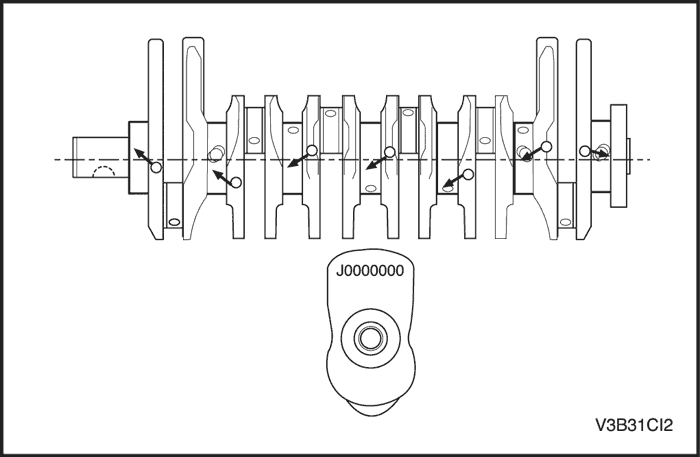

REPARACIÓN DE LA UNIDAD
Culata y componentes de la serie de válvulas
Herramientas necesarias
Herramienta de instalación/desmontaje del eje del balancín DW110-160
Compresor de muelles de válvula 09916-14510
Adaptador del compresor de muelles de válvula 09916-48210


Procedimiento de desmontaje
- Desmonte la culata. Consulte el apartado "Culata" en esta sección.
- Desmonte el distribuidor de levas de admisión y el distribuidor de levas de escape.
- Quite los tornillos de las tapas de los cojinetes de los árboles de levas, de manera gradual, y en la secuencia indicada para cada tapa.
Precaución: Compruebe que los números de posición grabados en las tapas de los cojinetes del árbol de levas no están mezclados. Las tapas de los cojinetes del árbol de levas deben instalarse por orden numérico, las tapas de los cojinetes del árbol de levas de admisión: 1-3-5-7-9-11-13; y las tapas de los cojinetes del árbol de levas de escape: 2-4-6-8-10-12-14.
- Desmonte el árbol de levas de admisión y el árbol de levas de escape.
- Extraiga los tapones del eje del balancín situados en ambos extremos del bloque de cilindros.
- Desmonte los ejes del balancín trasero y delantero mediante la herramienta de instalación/desmontaje del eje del balancín DW110-160.
Precaución: Para evitar fugas de aceite en la cámara de presión, no gire la culata durante la instalación o desmontaje del balancín.
- Desmonte los balancines.
- Desmonte el retén de muelle de válvula, el muelle de válvula, la chaveta de válvula, y el vástago de válvula mediante el compresor de muelles de válvula 09916-14510 o el adaptador del compresor de muelles de válvula 09916-48210.
- desmonte las válvulas de admisión y escape.
procedimiento de montaje
- El procedimiento de montaje debe ser el mismo que el procedimiento de desmontaje, pero en orden inverso.
- Instale las válvulas de admisión y escape, el retén de muelle de válvula, el muelle de válvula, la chaveta de válvula, y el vástago de válvula mediante el compresor de muelles de válvula 09916-14510 o el adaptador del compresor de muelles de válvula 09916-48210.
- Asegúrese de colocar las válvulas de escape y admisión en la posición correcta. El diámetro de las válvulas de admisión es mayor que el de las válvulas de escape.
- Instale los balancines.
- Instale los ejes del balancín mediante la herramienta de instalación/desmontaje del eje del balancín DW110-160.
Aviso: El eje del balancín delantero, que se instalará en el lado de la cadena de distribución, se puede identificar por el orificio correspondiente al muelle del balancín.
- Aplique el compuesto obturador a los tapones del eje del balancín.
- Coloque los tapones del eje del balancín.
Apretar
Apriete el tapón del eje del balancín hasta 35~45 N•m (26~33 lb-pie).
- Coloque los árboles de levas de escape y admisión.
Aviso: El árbol de levas de admisión puede identificarse por la ranura que hay junto a la brida del distribuidor de levas. El árbol de levas de escape no tiene ranura.
- Coloque las tapas del árbol de levas en la secuencia que se indica.
Precaución: Compruebe que los números de posición grabados en las tapas de los cojinetes del árbol de levas no están mezclados. Las tapas de los cojinetes del árbol de levas deben instalarse por orden numérico, las tapas de los cojinetes del árbol de levas de admisión: 1-3-5-7-9-11-13; y las tapas de los cojinetes del árbol de levas de escape: 2-4-6-8-10-12-14.
- Apriete los tornillos de la tapa del árbol de levas en la secuencia indicada.
Apretar
Apriete los tornillos de la tapa del árbol de levas hasta 10~14 N•m (89~124 lb-pulg.).
- Instale los distribuidores de levas.
Apretar
Apriete los tornillos del distribuidor de levas hasta 18~22 N•m (13~16 lb-pie).
Aviso: Los distribuidores de levas de escape y admisión se identifican por las marcas grabadas: "IN" para los de admisión y "EX" para los de escape.
Cojinetes de bancada y cojinetes de biela
Herramientas necesarias
Compresor del aro del pistón DW110-170-01 (2 L)
Compresor del aro del pistón DW110-170-02 (2,5 L)
Dispositivo de ajuste del cigüeñal DW110-190
Instalador del retén de aceite trasero del cigüeñal DW110-180-02
Instalador del retén de aceite delantero del cigüeñal DW110-180-01
Procedimiento de desmontaje
- Desmonte la placa de asiento. Consulte el apartado "Placa de asiento" de esta sección.
Aviso: Los tamaños de cada cojinete del cigüeñal superior están marcados en la placa de asiento, tal y como se muestra en la ilustración.
- Desmonte los cojinetes del cigüeñal inferior.
Aviso: Los cojinetes del cigüeñal inferior tienen ranuras de diferentes formas y tamaños que se identifican por las marcas en color situadas en el lateral del cojinete: verde (tamaño 0), amarillo (tamaño 1) y rosa (tamaño 2).
- Desplace el pistón hasta el límite de su carrera de descenso.
- Marque la posición en la tapa de la biela.
- Extraiga las tapas y cojinetes de la biela.
- Desmonte el pistón.
- Desmonte los segmentos del pistón.
- Desmonte el cigüeñal.
- Desmonte el cojinete superior de biela del pistón.
- Desmonte la junta del cigüeñal trasero.
procedimiento de montaje
- El procedimiento de montaje debe ser el mismo que el procedimiento de desmontaje, pero en orden inverso.
- Instale los cojinetes del cigüeñal superior.
Aviso: Los tamaños de cada cojinete del cigüeñal superior están marcados en la placa de asiento, tal y como se muestra en la ilustración.
Aviso: Los cojinetes del cigüeñal inferior tienen ranuras de diferentes formas y tamaños que se identifican por las marcas en color situadas en el lateral del cojinete: verde (tamaño 0), amarillo (tamaño 1) y rosa (tamaño 2).
- Monte el cigüeñal.
- Monte el bulón.
- Monte los segmentos del pistón.

- Instale el pistón mediante el compresor del segmento del pistón DW110-170-01 (2 L) o DW110-170-02 (2,5 L). Tenga en cuenta el orden de instalación del pistón; es el siguiente: 2 -> 5 -> 1 -> 6 -> 3 -> 4 (número de pistón).
- Asiente los cojinetes de biela e instale la tapa de biela de forma temporal.
Aviso: Los tamaños de los cojinetes de biela se identifican por las marcas en color situadas en el lateral del cojinete; son verdes (tamaño 0) y amarillas (tamaño 1).
- Instale el cojinete de empuje.
Aviso: Asegúrese de que la ranura del aceite del cojinete de empuje mira hacia afuera.
- Apriete los tornillos de la tapa de biela mediante la herramienta de ajuste del cigüeñal DW110-190. Tenga en cuenta el orden de los tornillos de la tapa de biela; es el siguiente: 2 -> 5 -> 1 -> 6 -> 3 -> 4 (número de pistón).
Apretar
Apriete los tornillos de la tapa de biela hasta 20 N•m (15 lb-pie). Tras apretarlos, gire los tornillos 45° y luego otros 90°.

- Instale el cojinete del cigüeñal inferior.
Aviso: Los cojinetes del cigüeñal inferior tienen ranuras de diferentes formas y tamaños que se identifican por las marcas en color situadas en el lateral del cojinete: verde (tamaño 0), amarillo (tamaño 1) y rosa (tamaño 2).
- Instale la placa de asiento. Consulte el apartado "Placa de asiento" de esta sección.
- Asiente e instale el retén de aceite trasero del cigüeñal mediante el instalador del retén de aceite trasero del cigüeñal DW110-180-02.
- Monte la culata. Consulte el apartado "Culata" en esta sección.
- Instale la cubierta de la cadena de distribución. Consulte el apartado "Cadena de distribución" de esta sección.
- Instale el retén de aceite delantero del cigüeñal mediante el instalador del retén de aceite delantero del cigüeñal DW110-180-01.
- Monte la tapa de la culata. Consulte el apartado "Tapa de la culata" en esta sección.
- Monte el colector de admisión. Consulte el apartado "Colector de admisión" de esta sección.
- Instale el conjunto del motor. Consulte el apartado "Conjunto del motor" de esta sección.
 | |  | |
| © Copyright Chevrolet Europe. Reservados todos los derechos |